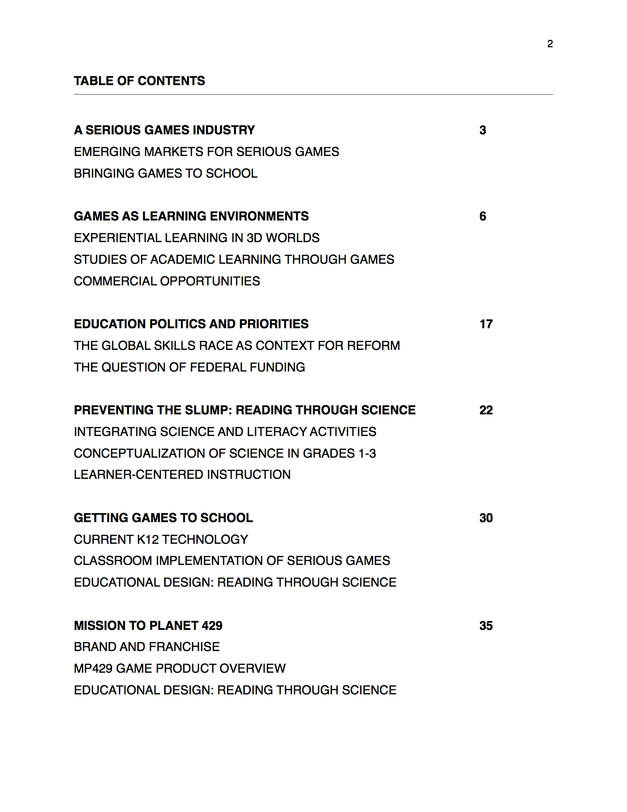

Kit Richert
PORTFOLIO: NUKOTOYS
PROJECT 1
Help make Mission to Planet 429 a better educational game
PROJECT 2
Write a literature review on Game-based Learning
Project Overview
Delivered a 40+ page internal, multipurpose research paper that explored the efficacy and marketablity of educational video games [such as Nukotoys’ Mission to Planet 429]. This paper was to be the basis of a grant.
Methods
- Reviewed the most up-to-date educational psychology research using university libraries
- Synthesized the current market research for both gaming and educational technology industries
- Reviewed a variety of opinion pieces and policy briefs
- Synthesized sources and drafted the document
